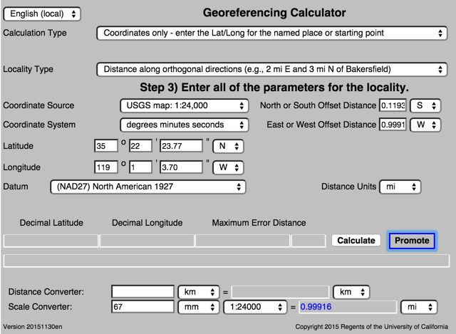

Manual for the Georeferencing Calculator
The Georeferencing Calculator described in this document is a javascript application created as a tool to aid in the georeferencing of descriptive localities such as those found in museum-based natural history collections. It was originally designed for the Mammal Networked Information System (MaNIS) and has been widely adopted in other large-scale collaborative georeferencing projects to supplement semi-automated georeferencing tools such as BioGeomancer and GeoLocate. The application makes calculations using the methods described in the MaNIS/HerpNET/ORNIS Georeferencing Guidelines.
It will be useful to run the calculator while reviewing this document; to do so, either download the stand-alone version of the calculator (http://manisnet.org/gci2.zip) or use the online version at http://manisnet.org/gci2.html. When the application is finished loading, it should more or less as in Figure 1, below.
Figure 1. Screen image of the Georeferencing Calculator when it first opens.
The calculator is designed to show the user only what is needed to proceed from one step to the next in the georeferencing process. The general work flow is:
Step 1: Select the type of calculation you want to perform.
Step 2: Select the type of locality best matches the one you want to georeference.
Step 3: Enter all of the parameters needed to make the calculation. The calculator will show text and selection boxes for values that are needed for the calculation.
Step 4: Calculate.
Step 1
Click on the button to the right of “< span class="c1">Calculation Type” to expand the list. When the list is expanded, the application should appear as in Figure 2, below.
Figure 2. Step 1: Selecting a Calculation Type.
Select the calculation type you want to perform. If you want to figure out coordinates and errors based on a named place and offsets, select the "Coordinates and error" option. If you already have the coordinates for the final location and you only want to calculate the error, select the "Error only" option. If you need to determine the coordinates of a named place based on known reference coordinates, such as from the corner of a map, select the “Coordinates only” option.
NOTE: Selecting the "Error only" option, the calculator will always return the decimal latitude and longitude equivalent of the coordinates entered manually into the Latitude and Longitude fields. When using the "Coordinates and Errors" or “Coordinates only” options the calculator will always return decimal latitude and longitude different from those entered, because the locality description will have one or more offsets from those coordinates.
Calculating Coordinates and Error
After selecting the “Coordinates and error” calculation type, a new drop-down list box for Locality Type will appear on the screen. When this list is expanded, the application should appear as in Figure 3, below.
Figure 3. Coordinate Calculation Step 2: Selecting a Locality Type.
Select the locality type that best matches the locality for which you are trying to determine coordinates and error.
After selecting the locality type, a number of controls will appear on the page. These controls allow you to enter or choose values for all of the parameters relevant to the selected locality type. Figure 4, below, shows an image of the Georeferencing Calculator when a locality type of "Distance at a heading" is selected from the Locality Type drop-down list.
Figure 4. Parameters relevant to georeferencing a locality containing a distance at a heading.
Example
Suppose the locality you are trying to georeference is "10 mi E (by air) Bakersfield" as shown as the example in selection box for the "Distance at a heading" locality type. Suppose also that you've obtained the coordinates for Bakersfield (35° 22' 24" N, 119° 1' 4" W) by determining the center of town to the nearest second from the USGS Gosford 1:24,000 Quad map. To learn how to coordinates using offsets from a location with known coordinates, see the section Calculating Coordinates Only.
To begin, select "USGS map: 1:24,000" from the Coordinate Source drop-down list. Next, select “degrees minutes seconds” from the Coordinate System drop-down list, then enter the coordinates for Bakersfield in the Latitude and Longitude fields that appear. Make certain to select the correct cardinal directions from the drop-down lists to the right of each coordinate field.
NOTE: For this example, the coordinate system ‘degrees minutes seconds” was selected because the map showed coordinates in degrees minutes seconds, thus the coordinates determined for the center of Bakersfield were described in the same way. In some cases, coordinates on a map, or other resource, may be represented in degrees decimal minutes, such as 35° 22’ N, 119° 0’ W or 35° 22.4’ N, 119° 1.066667’ W. Coordinates also may be presented in decimal degrees, such as 35.3733333, -119.0177778. The coordinate system selected in the calculator must reflect the coordinate system used on the map or other resource.
The Gosford Quad map uses the North American 1927 horizontal datum, so select "(NAD27) North American 1927" from the Datum drop-down list. In most cases you can find the datum printed on the bottom of the map. Sometimes an ellipsoid is listed on the map instead of a datum. The calculator also includes ellipsoids in the Datum drop-down list. If you find a resource such as a map with a datum that in not listed in the Calculator, try to find the ellipsoid for that datum using online resources, then select the ellipsoid in the Datum drop-down list.
The coordinates in this example have been specified to the nearest second, so select "nearest second" from the Coordinate Precision drop-down list. The direction given in the locality description is E (east), so select “E” in the Direction drop-down list. The offset distance is 10 mi (miles), so type "10" into the Offset Distance text box.
Bakersfield is quite a big place and we don't know if the original locality meant 10 miles from the center of town or 10 miles from the city limit (or something else entirely), so, given that it is 3 miles from the specified coordinates to the east edge of town (as measured on the map), the Extent of Named Place should be 3 miles. Enter "3" into the Extent of Named Place text field.
NOTE: If you had measured this distance in kilometers you can convert kilometers to miles using the Distance Converter at the bottom of the calculator and enter the converted number into the appropriate field (see the Distance and Scale Converters section to learn how to use the converters). All distance measurements must be in the same system as the locality description for the calculator to return proper results .
The determination of the coordinates for Bakersfield is only as accurate as the tools the georeferencer used; the map, the size of the units on the measurement tool, and the georeferencer’s ability to discern their placement relative to items on the map. Any error associated with the map itself is accounted for in the Coordinate Source selection. Error associated with the georeferencer’s ability to measure on the map is accounted for in the Measurement Error field.
To complete the Measurement Error field, you must first determine (or estimate) the smallest distance that you can reliably (repeatably) measure on the map. Generally, people can distinguish features or locations to within about one (1) millimeter, given a ruler with millimeter divisions. If you use a ruler with English units, you may be able to distinguish to 1/16 of an inch. The quality of your measuring tool, eyesight, and technique may alter these suggested values.
Once you have determined your smallest distance at which you can measure consistently and correctly, enter that value and the units into the Scale Converter at the bottom of the calculator, select the scale of the map on which you made your measurement, and then select the unit of measure into which you want to convert. For example, if you used a digital measuring tool that was able to measure to the nearest 0.1 mm on a 1:24000 map and you need to convert to miles, enter 0.1 into the Scale Converter , then select “mm” from the units drop-down list. Next, choose the “1:24000” scale option in the map scale drop-down list. Finally, select “mi” in the second drop-down list. Your answer to 0.1 mm at 1:24000 converted into miles will be displayed in blue (0.00149 mi). You can then type “0.00149” into the Measurement Error field, or move it from the Scale Converter using cut and paste keyboard combinations.
Next, make certain that "mi" is selected in the Distance Units drop-down list, since the locality is described in miles (“10 mi E...”). The distance component in this locality is 10 mi, which is precise to the nearest mile (see the discussion on this topic in the Georeferencing Guidelines). Select "1 mi" in the Distance Precision drop-down list. Now that all of the parameters for this locality have been entered, your calculator should appear as in Figure 5, below.
Figure 5. Calculator with all parameters entered for a “Distance at a heading” locality.
Next, click the Calculate button. The calculated coordinates (always presented in decimal degrees) for the locality ("10 mi E (by air) Bakersfield," in this example), and the Maximum Error Distance for the calculation will be given in the controls just above the distance and scale converters at the bottom of the calculator, as shown in Figure 6, below.
Figure 6. Calculated results for the locality "10 mi E (by air) Bakersfield."
The results, in blue, can be highlighted and copied onto the system clipboard using standard copy and paste key combinations and transferred to a spreadsheet or database. The long text box underneath the new coordinates and maximum error contains a tab-delimited record of the data for the current calculation. These data can be copied all at once and pasted directly into a spreadsheet or database that has the same field order, which consists of the following terms: decimalLatitude, decimalLongitude, coordinateUncertaintyInMeters, geodeticDatum, verbatimCoordinateSystem, Extent, MaxErrorDistance, DistanceUnits, DistancePrecision, and CoordinatePrecision. The underlined terms are defined by the Darwin Core standard ( http://rs.tdwg.org/dwc/terms/). Note, CoordinatePrecision given by the calculation results is the precision of the input coordinates, not the precision of the final outcome, thus this is not the same as the Darwin Core term “coordinatePrecision”.
NOTE: Whenever you make a new selection on the Coordinate System drop-down list, the contents of the list will change to reflect the new system and the value in the Coordinate Precision drop-down list will be reset to "nearest degree." Be certain to set the value of the Coordinate Precision after changing the coordinate system.
To begin a new calculation, you can select a new calculation type and/or a new locality type from the appropriate drop-down list or enter new data for all of the parameters necessary for your next calculation if it is the same calculation type and locality type. If the locality type is the same as for the previously georeferenced locality it is not necessary to select the locality type again. Values selected in the drop-down lists will remain selected until changed by the user, thus facilitating calculations for groups of localities having the same named place.
Calculating Errors only
To calculate the error for a locality for a locality with known coordinates, select “Error only” from the Calculation Type drop-down list. After selecting “Error only” a new Locality Type drop-down list box will appear on the screen. When this list is expanded, the calculator should appear as in Figure 7, below.
Figure 7. Error Only Calculation, Step 2: Selecting a Locality Type.
Select the locality type that best matches the locality for which you are trying to determine the maximum error distance. The calculator is able to calculate the Maximum Error Distance (or Maximum Uncertainty) for all of the locality types described in the MaNIS/HerpNET/ORNIS Georeferencing Guidelines ( http://manisnet.org/GeorefGuide.html).
After selecting a locality type, a number of controls will appear on the page. These controls allow you to enter or choose values for all of the parameters relevant to the selected locality type. Figure 8, below, shows an image of the Georeferencing Calculator after a locality type of "Distance only" was selected from the Locality Type drop-down list and the same parameters were entered, and calculated, as for the example in the Calculating Coordinates and Error section, above.
Figure 8. Screen image showing an “Error only” calculation for a “Distance only” locality.
The results, in blue, can be highlighted and copied onto the system clipboard using standard copy and paste key combinations. Only those controls showing on the page when the Calculate Error button is clicked will figure into the error calculations.
NOTE: Whenever you make a new selection on the Coordinate System drop-down list, the Coordinate Precision will reset to "nearest degree." Be sure to reset the Coordinate Precision after changing the coordinate system.
To begin a new calculation, you can select a new calculation type and a new locality type from the appropriate drop-down menus or enter new data for all of the parameters necessary for your next calculation. If the locality type is the same as for the previously georeferenced locality, it is not necessary to select the locality type again. Values selected in the drop-down lists will remain selected until changed by the user, thus facilitating error calculations for groups of localities having the same named place.
Calculating Coordinates Only
At times it may be necessary to determine the coordinates before you can georeference the locality description itself. For, example, to georeference the locality "10 mi E (by air) Bakersfield," it is necessary to determine the coordinates for “Bakersfield” before the whole locality can be georeferenced. Suppose your coordinate source is the USGS Gosford 1:24,000 Quad map. Once you have determined the point on the map you believe to be the center of Bakersfield, find a convenient point on the map having known coordinates, such as the nearest corner of the map. In this case, the northeast corner of the map is closest and marked with the known coordinates 35° 22” 30” N, 119° 00’ W.
To begin the calculation, select “Coordinates only” (because you only want to find the coordinates of the center of Bakersfield) as your Calculation Type and “Distance along orthogonal directions” as your Locality Type (because you are going to measure south and west from the corner of the map the the center of Bakersfield). Next, select “USGS map: 1:24,000” as your Coordinate Source and “degrees minutes seconds” as your Coordinate System. Enter the coordinates of the known point (the corner of the map, in this example) into the Latitude and Longitude fields (35° 22” 30” N, 119° 00’ W - don’t neglect the cardinal directions for the correct hemisphere). Finally, select “(NAD27) North American 1927” as your datum. When complete, the Calculator should appear as in Figure 9, below.
Figure 9. Calculator fields completed with known parameters for “Coordinates only” calculation type.
Now use your measuring tool to measure a) the distance between the northeast corner of the map and the line of latitude of the center of Bakersfield where it meets the east edge of the map, and b) the distance between the northeast corner of the map and the line of longitude of the center of Bakersfield where it meets the north edge of the map. These are your orthogonal distances to the S and W of the known point, the northeast corner of the map.
NOTE: You will have to convert the measurements you make on the maps (mm, cm, or inches) into the distance unit provided in the locality (miles, in this example). You can use the Scale Converter, at the bottom of the Calculator, to do this calculation (see the section entitled Distance and Scale Converters). The accuracy of your measurements is determined by the size of the units marked on your measurement tool and your ability to discern their placement relative to items on the map, thus, final coordinates may vary depending upon the units you can measure. This uncertainty is addressed by the Measurement Error field in the “Coordinates and error” and “Error only” calculation types and will included in future steps in the georeferencing process.
The point we have determined to be the center of Bakersfield is 8 mm south of the 35° N line of latitude and 67 mm west of the 119° W line of longitude. After you have used the Scale Converter to convert millimeters to miles, cut and paste the values for miles into the Offset Distance boxes on the right side of the calculator: 0.1193 should be pasted or typed into the North or South Offset Distance field, and the cardinal direction drop-down list should be set to “S” (south); 0.99916 should be pasted or typed into the East or West Offset Distance field, and the cardinal direction drop-down list should be set to “W” (west). The Distance Units drop-down list should display “mi,” for miles, since that is the unit described in the locality. The calculator now has all of the parameters necessary to complete the calculation and should appear as in Figure 10, below.
35 22 23.7702 -119 1 3.70272
Figure 10. Calculator with all parameters entered for a “Coordinates only,” “Distance along orthogonal directions” calculation of the coordinates on the map as measured from a corner.
Next, click the Calculate button. The calculated coordinates (always in decimal degrees) for the center point of Bakersfield are displayed, in blue, to the left of the Calculate button at the bottom of the calculator, as shown in Figure 11, below.
Figure 11. Calculated results for the center point of Bakersfield using “Coordinates only.”
Now that you have the starting coordinates for Bakersfield for the locality "10 mi E (by air) Bakersfield" which you can proceed to georeference. To begin this process, click the Promote button to copy the equivalent DecimalLatitude and DecimalLongitude from the results provided by the Calculator into the Latitude and Longitude fields and converted to the Coordinate System, as shown in Figure 12, below.

Figure 12. Calculator after coordinates have been promoted into the Latitude and Longitude fields from the results of a previous calculation.
To complete your georeference, change the Calculation Type at the top of the Calculator to “Coordinates and error,” the Locality Type to “Distance at a heading,” and proceed following the steps described in the Coordinates and Error section, above.
NOTE: Whenever the Calculation Type or Locality Type are changed, the information contained within the parameter fields will be retained, with the exception of the Coordinate Precision, which defaults to “nearest degree” with every change. It may be necessary to reset or update the data in the Calculator to make subsequent calculations. Do not forget to reset the Coordinate Precision as necessary.
Distance and Scale Converters
The Calculator has two converters built in to eliminate the need for additional resources during the georeferencing process; one for distance and one for scale. Both are located at the bottom of the Calculator and appear after a Calculation Type and a Locality Type have been selected.
To convert a distance from one unit to another, such as 10 miles to X kilometers, simply type “10” into the first field of the Distance Converter. Next, select “mi” from the left-hand drop-down list. To convert miles to kilometers, select “km” from the right-hand drop-down list. The result will automatically appear in the converter, in blue (16.09344 km, in this example), see Figure 14, below. To move this result to another field in the Calculator, use the cut and paste key combinations.
Figure 14. Distance Converter, converting 10 miles to kilometers.
When using a map and a measuring tool it is necessary to convert a distance measured on a map in units such as millimeters or inches into real world units (miles, kilometers) to complete the georeference for a specific locality. To georeference “10 mi E (by air) Bakersfield,” for example, all of the parameters entered into the Calculator (excluding the distance and scale converters) should be in miles.
To convert a map measurement of 8 centimeters into miles, using a map with a scale of 1:50000, simply type “8” into the first field of the Scale Converter. Next, select “cm” in the left-hand drop-down list, then select the map scale (“1:50000,” in this example) from the scale drop-down list. To convert centimeters to miles, select “mi” from the right-hand drop-down list. The result will automatically appear, in blue (2.48548 mi, in this example), see Figure 15, below. To move this result to another field in the Calculator, use the cut and paste key combinations.
Figure 15. Scale Converter, converting 8 cm at 1:50000 to miles.
System Requirements
Expect the Georeferencing Calculator to work in any browser enabled with Java 2 or later. Expect a minor delay the first time you load the Calculator into your browser. After that, the files will be cached if your browser settings allow this, and the loading will be much faster.
Glossary
Calculate - Button used to calculate new coordinates, error, and other variables as a result of data entered into the Calculator. See the Tab-delimited Calculation Result glossary entry for a complete list.
Calculation Type - Drop-down list from which one of the following three types of calculations can be selected:
Coordinates and Error - Used to determine a set of coordinates and the associated error based on the parameters used in their determination, when the coordinates for a named place in a locality description are known.
Coordinates Only - Used to determine the coordinates for a named place in a locality description when distances to a set of known coordinates are measurable. Example: finding the coordinates of a named place based on the distances to coordinates labeled at the corner of a map.
Error Only - Used to determine the error when the final coordinates for a locality description are already known. This is necessarily the case for the following Locality Types: Coordinates Only, Named Place Only, Distance Only, and Distance Along Path.
Coordinate Precision - The category of precision with which a set of coordinates has been specified in their source. The set of possible values for precision is based on the coordinate system. A value of “exact” is any level of precision higher than the otherwise highest precision given on a list. Sources may include paper or digital maps, digital imagery, GPS’s, gazetteers, or locality descriptions. Examples: 35 22’ 24” = nearest second.
Coordinate Source - The tool or other resources (map, GPS, gazetteer, locality description) from which the coordinates were derived.
Coordinate System - Defines the original geographic coordinate system (decimal degrees, degrees minutes seconds, degrees decimal minutes) of the coordinate source. Selecting the original coordinate system allows the coordinates to be entered in their native format and forces the calculator to present appropriate values for coordinate precision.
Datum (Geodetic Datum) - Defines the position of the origin and orientation of an ellipsoid upon which the coordinates are based for the given Coordinate Source. The Calculator includes ellipsoids on the drop-down list of Datums, as sometimes that is all that coordinate source shows. Examples: WGS84, NAD27
Ellipsoid - The shape and size of a 3-dimensional model of the earth. The ellipsoid information is sufficient to do the types of calculations supported by the Georeferencing Calculator. Examples: Clarke 1866 ellipsoid, International 1924 ellipsoid.
Decimal Latitude - Presents the resulting latitude for a given calculation in decimal degrees. See, Latitude.
Decimal Longitude - Presents the resulting longitude for a given calculation in decimal degrees. See, Longitude.
Direction - The Calculator is designed to accommodate as many direction types as possible. It Includes abbreviations for all 32 points on the compass. You can read more about the directions and Boxing the Compass at http://en.wikipedia.org/wiki/Boxing_the_compass.
Nearest Degree - When the “nearest degree” option is selected from the Direction drop-down list, an empty field appears in the Calculator to the right of the Direction drop-down list. Enter the heading (bearing; 0 is north, 90 is east, etc.) from the named place as given in the locality description. Example: “7 miles at 122° from mouth of Sacramento River” Note: if the bearing is given toward the named place instead of from it, enter the bearing 180 degrees away from the given bearing. Example: “1.5 km 262 degrees to Whale Rock,” for which you should enter “82” into the empty field.
Distance Converter - A set of controls at the bottom of the Calculator comprising a tool designed to convert measurements from one unit of length into another. Example: 10 miles = 16.09344 kilometers.
Distance Precision - The precision with which a distance was measured and described reliably in a locality. Examples: select “1 mi” for "6 mi NE of Davis," select “1/10km” for “3.2 SE of Lisbon.”
Distance Units - Used to set in the real world units used in the locality description. Use the original units as given in the description in order to configure the calculator to make the appropriate measurements and errors. Examples: select “mi” for "10 mi E (by air) Bakersfield," select “km” for “3.2 km SE of Lisbon.”
Extent of Named Place - The distance from the geographic center to the furthest point of the geographic area covered by a named place or feature. Types of named places include urban areas, small/mid-sized towns, remote locations, street addresses, junctions and crossings, and traditional and non-traditional features (lakes, mountains, cultural lands, reservations, parks, and other geographic entities).
GPS Accuracy - When “GPS” is selected as the Coordinate Source, the label for the Measurement Error text box changes to “GPS Accuracy”. Enter the value given by the GPS at the time the coordinates were captured, or 30m for open areas after 1 May 2000 when Selective Availability was discontinued, or 100m in for other conditions.
Languages - The Calculator may be used in English, Spanish, Portuguese, French, or Dutch. The language can be changed using the language drop-down list in the upper left-hand corner of the Calculator. The English option has two variants with subtle differences. “English” will present the Calculator and all labels and formatting in English. “English (local)” will present the Calculator in the English language while retaining the Locale settings of the computer on which it is run. Thus, a computer configured for a French Locale will require and display numbers using commas as the decimal separator. Selecting “English” in the drop-down language list will force the calculator to use the period as the decimal separator. All other language selections not only change the language, but also change the number formatting to match.
Latitude - The angle north or south of the equator (latitude 0). Latitudes north of the equator are positive by convention, while latitudes to the south are negative.The Calculator supports degree-based coordinate systems for latitude and longitude: degrees minutes seconds (35° 22’ 24” N), decimal degrees (35.3733333), and degrees decimal minutes (35° 22.4 N).
Locality Type - The pattern of the most specific part of a locality description to be georeferenced. There are six variations that the Calculator can compute: Coordinates only, Distance along a path, Distance along orthogonal directions, Distance at a heading, Distance only, and Named place only. See Extent of Named Place for examples of named places.
Coordinates Only - Examples: 35° 22’ 24” N, 119° 1’ 4” W; 35.3733333, -119.0177778
Distance Along A Path - Example: 13 mi E of Bakersfield (State Highway 178)
Distance Along Orthogonal Directions - Example: 2 mi E 3 mi N of Bakersfield
Distance At A Heading - Example: 10 mi E (by air) Bakersfield
Distance Only - Example: 5 mi from Bakersfield
Named Place Only - Examples: “Bakersfield,” “Lake Pontchartrain,” “Yosemite National Park”
Longitude - The angle east or west the prime meridian (longitude 0) - an arc between the north and south poles. Longitudes east of the prime meridian are positive by convention, while longitudes to the west are negative. The Calculator supports degree-based coordinate systems for latitude and longitude: degrees minutes seconds (35° 22’ 24” N), decimal degrees (35.3733333), and degrees decimal minutes (35° 22.4 N).
Maximum Error Distance (coordinateUncertaintyInMeters) - The combination of all sources of error (coordinate uncertainty, map scale, extent, GPS accuracy, measurement error, unknown datum, imprecision in direction measurements, and imprecision in distance measurements) in given calculation expressed as a linear distance, which can be thought of as a radius of a circle of uncertainty containing the entirety of the possible places a locality description could mean.
Measurement Error - Accounts for error associated with the ability to distinguish one location from another using any measuring tools, such as rulers on paper maps.
Offset Distance - The linear distance from a point of origin. Offset are used for localities that are measured by orthogonal directions (3 km N, 2 km E) or headings (N, SE, 262°).
North or South Offset Distance - The distance of an orthogonal direction to the north or south of a known line of latitude.
East or West Offset Distance - The distance of an orthogonal direction to the east or west of a known line of longitude.
Promote - Button used to copy calculated coordinates from the “results” fields (Decimal Latitude, Decimal Longitude) into the Latitude and Longitude fields in preparation for a new calculation based on the previous results, eliminating the need to copy manually or to use cut and paste keyboard combinations. Used when the calculated coordinates represent the coordinates of a named place in locality description. Example: Using the “Coordinates only” calculation type, the coordinates for the named place “Tiny Town” are calculated. These coordinates, presented in the “results” fields, can be promoted up into the Latitude and Longitude fields to georeference the locality description “3 km SE Tiny Town” using the “Coordinates and error” calculation type.
Scale Converter - A set of controls at the bottom of the Calculator comprising a tool designed to convert units of measure from a given map scale into units in real world distances. Example: 8 cm at a 1:50000 map scale = 2.48548 miles.
Tab-delimited Calculation Result - The long field immediately under the Calculate and Promote buttons displays the complete set of values returned as a result of a calculation. Variables returned consist of of Darwin Core (http://rs.tdwg.org/dwc/) terms first (underlined) followed by other relevant data, in the following order: decimalLatitude, decimalLongitude, coordinateUncertaintyInMeters, geodeticDatum, verbatimCoordinateSystem, Extent, MaxErrorDistance, DistanceUnits, DistancePrecision, and CoordinatePrecision (this CoordinatePrecision is the precision of the input coordinates, not the final outcome, thus this is not the same as the Darwin Core term “coordinatePrecision”).
Version - Displayed in the bottom left-hand corner of the Calculator as yyyymmdd(language). Example: 20110430en = English version created April 27, 2011. The changes from version to version are given in a change log file.
|
John Wieczorek |
2002-04-11, JRW |
|
John Wieczorek |
2006-01-21, JRW |
|
Dave Bloom, John Wieczorek |
2011-04-24, DAB |
|
John Wieczorek |
2013-02-06, JRW |
|
John Wieczorek |
2015-11-30, JRW |
University of California, Berkeley, CA 94720, Copyright © 2001-2015, The Regents of the University of California.